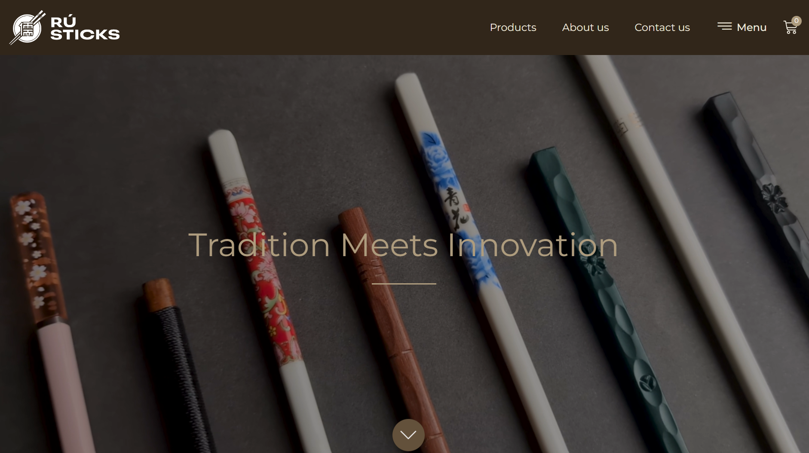

Building a B2B tableware brand from a seed grant to 20+ outlets.
One of 10 teams chosen from 120 at Masters' Union. RuSticks went from pitch deck to pan-India retail distribution — built end to end.

A live venture built inside one of India's most competitive MBA programs.
Masters' Union runs a live venture program where student teams build real businesses with real capital. The seed grant — Rs 50K — is competitive: 120 teams pitch, 10 win. RuSticks was one of those 10. The mandate was not to build a case study. It was to build a company.
RuSticks is a B2B tableware brand targeting hospitality businesses — restaurants, hotels, catering companies — with premium, design-led cutlery and serviceware. I led brand positioning, pricing architecture, and retail distribution strategy.
Tableware is a commodity category. Premium B2B is a positioning problem.
The tableware market for hospitality is dominated by undifferentiated suppliers competing on price. Hotel procurement teams buy on specification sheets, not brand stories. The challenge was to establish RuSticks as a design-led alternative worth a premium in a category where premium positioning had almost no precedent at the scale we were targeting.
The secondary problem: B2B distribution in hospitality requires category credibility before any buyer will place a trial order. We had none at launch.
Position on design, distribute through credibility proxies.
The brand strategy anchored on a single idea: tableware is the last touchpoint of the dining experience. Every element of food presentation — plating, lighting, service — culminates in the moment the guest picks up a fork. The cutlery is not operational equipment. It is sensory design.
This framing gave RuSticks a positioning hook that procurement teams had never heard before — and that the right decision-maker (typically an F&B director or head chef, not a procurement officer) immediately understood. We built our outreach to reach the right person in each account.
For distribution, we used boutique restaurants and design-forward cafes as credibility anchors — placing inventory at low or zero margin in the first wave of outlets, generating photography and testimonials that could be used in pitches to larger hotel chains.
20+ outlets. A repeatable B2B sales motion.
RuSticks is now stocked across 20+ hospitality outlets pan-India, with accounts spanning independent restaurants, hotel F&B operations, and catering businesses. The pricing architecture we built — tiered by order volume and product line — is holding. The distribution playbook (credibility anchor → photography → pitch to larger accounts) is repeatable.
B2B sales require reaching the person who cares, not the person who signs.
Procurement teams buy on spec. Creative directors buy on feeling. We wasted early weeks pitching to the wrong person in each account. Once we redirected outreach to F&B directors and head chefs — the people who care about how the table looks — conversion improved significantly. In B2B, ICP is not just the company. It is the specific person within the company who feels your problem.